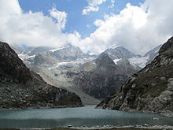

Jammu and Kashmir[b] is a region administered by India as a union territory[1] and consists of the southern portion of the larger Kashmir region, which has been the subject of a dispute between India and Pakistan since 1947, and between India and China since 1962.[3][18] The Line of Control separates Jammu and Kashmir from the Pakistani-administered territories of Azad Kashmir and Gilgit-Baltistan in the west and north. It lies to the north of the Indian states of Himachal Pradesh and Punjab and to the west of Ladakh, which is also subject to the dispute as a part of Kashmir, and administered by India as a union territory.
Provisions for the formation of the union territory of Jammu and Kashmir were contained within the Jammu and Kashmir Reorganisation Act, 2019, which was passed by both houses of the Parliament of India in August 2019. The act re-constituted the former state of Jammu and Kashmir into two union territories, one being Jammu and Kashmir and the other being Ladakh, with effect from 31 October 2019.
Jammu and Kashmir is named after the two regions it encompasses – the Jammu region and the Kashmir Valley. The Government of Pakistan and Pakistani sources refer to Jammu and Kashmir as a part of "Indian-occupied Kashmir" ("IOK") or "Indian-held Kashmir" (IHK).[20][21] The Government of India and Indian sources in turn, call the territory under Pakistan control "Pakistan-occupied Kashmir" ("POK") or "Pakistan-held Kashmir" ("PHK").[22][23] "Indian-administered Kashmir" and "Indian-controlled Kashmir" are often used by neutral sources.
A high-altitude alpine lake in the Himalayan range in Jammu and Kashmir
The climate of Jammu and Kashmir varies with altitude and across regions. Southern and southwestern areas have a sub tropical climate, with hot summers and cool winters. This region receives most of its rainfall during the monsoon season. In the east and north, summers are usually pleasant. The effect of the monsoon diminishes in areas lying to the leeward side of the Pir Panjal, such as the Kashmir valley, and much of the rainfall happens in the spring season due to western disturbances. Winters are cold, with temperatures reaching sub-zero levels. Snowfall is common in the valley and the mountain areas.
Go to this website for your booking : Book now